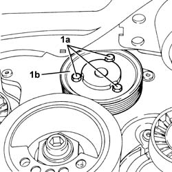

1088C24 WATER PUMP PULLEY - R + R WITH DRIVE BELT REMOVED
- Path
- Procedures > 10 ENGINE UNIT > 1088 ENGINE COOLING > 1088C WATER PUMP AND THERMOSTAT > 1088C24 WATER PUMP PULLEY - R + R WITH DRIVE BELT REMOVED
- Kind
- repair procedure (removal / refitting; the operation number is the code)
- Applies to
- engines: 3.2 V6; all production periods
- Interactive page
- https://sloeber94.github.io/elrnDB-aGt/en/#/125001179
Applies to: engines: 3.2 V6; all production periods
 Removing
Removing
 Refitting
Refitting1. Undo the bolts (1a) and remove the water pump pulley (1b).

Applies to: engines: 3.2 V6; all production periods
Refitting
RemovingPlace the water pump drive pulley back in its housing and secure it tightening the bolts to the recommended torque.
 | Fastening | Component | Ø | Value (daNm) |
|---|---|---|---|---|
- | Bolt | COOLANT PUMP PULLEY | M6 | (Water pump side) 0.7 ÷ 0.9 |